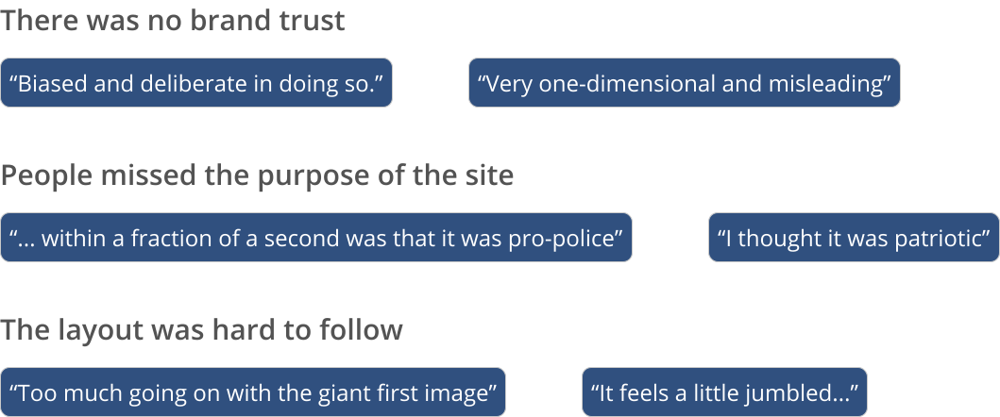
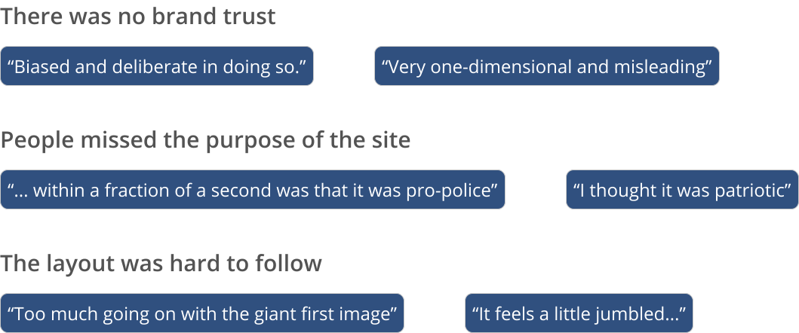

UX Research, Information Architecture, UI Design

Did you know that since 2006, nearly 25% of American officers fired by police chiefs for misconduct were eventually reinstated after police unions appeals? Neither did I.
Police Unions Exposed is a non-profit organization that highlights and fights for social justice and accountability in police unions. They wanted to build a responsive website to bring attention to their mission.
The client's needs to educate and promote their campaigns and petitions were balanced with what a user needs to stay engaged. We let the content shine through an organized and well-thought website layout and an intuitive information architecture.

We were pressed for time to push out a design for the dev team. Using an agile framework, I suggested we send out a survey to see how people stay engaged when reading information-dense websites. We also collected people's thoughts on an initial homepage mockup provided to us by our stakeholders.
What keeps people engaged while reading?
Why do people enjoy their method of following the news?
What did people think of the inVision mockup?
The following changes were priority, as 23% of participants indicated they’d leave the website out of confusion or distrust.
 

The client requested to have their Twitter feed on the homepage so website visitors could stay up to date on PUE's latest activity. After discussing the feasability with the development team, we were left with two choices: horizontal or vertical? After comparing them based on their benefits, we opted for the vertical layout.
For the campaigns page, the focus was to inform people about the campaign and provide easy access to signing the petition. We decided to have a fixed petition section for the campaigns. While employing the best use of page real-estate, a fixed petition would increase accessibility for people to sign up without needing to endlessly scroll. We felt confident in this decision as competitors employed a similar design decision.

After presenting the wireframes to the clients, we went with option #3: fixed on the second row. It was envisioned to take up the full viewport of a standard desktop screen so users would see all priority information upfront.
Learning about campaigns and signing petitions

Sign up for the mailing list
Using remote, unmoderated testing through Maze, we tested our prototype with the goals of:
The problem we faced early on with the inVision mockup was that users missed the purpose of the website, thinking it was supporting police unions instead of fighting against them. By reorganizing the homepage’s layout and providing more context with emphasis on large headlines and clear pictures, PUE’s mission was successfully communicated.
From the heat map shown below, we saw that users were misclicking on the card to learn more information about the campaign. To make our designs consistent with this mental model, we simply made the entire card clickable!
Users felt the CTA’s shown in the hero image were confusing and misleading. They wanted to learn more about the organization before donating or joining the mailing list, and felt the current hero image/description didn’t provide them with enough context.